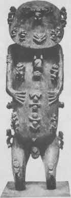

Levha XIX. Tanrıların Anası (Meksika).

Levha XX. Tangaora, Tanrıları ve insanları Yaratıyor (Rurutu Adası)
Hiçliklerin ötesindeki hiçlikten bitki benzeri, gizemli, dünyayı tutan şeyler kat kat açıldı. Yukarıdaki dizilerin onuncusu gecedir; onsekizincisi uzay ya da eter, görünür dünyanın çerçevesi; ondokuzuncusu erkek-dişi karşıtlığı; yirmincisi gördüğümüz evrendir. Böyle bir dizi, varlığın gizeminin derinliklerinin ötesindeki derinliği düşündürür. Düzeyler kahramanın dünyayı-kavrayan macerasında dile getirdiği derin düşüncelere karşılık gelir; meditasyonda içedönen zihnin bildiği ruhsal katmanları sıralarlar. Ruhun karanlık gecesinin dipsizliğini temsil ederler.{365}
Musevi kabalası yaratılış sürecini Büyük Yüz’ün BEN VARIM’ından bir dizi çıkış olarak sunar. İlki silüet halinde başın kendisidir ve bundan “dokuz görkemli ışık” çıkar. Çıkanlar ayrıca ters dönmüş, “kavranılmaz bir yüksekliğe” kök salmış kozmik bir ağacın dalları olarak da sunulur. Gördüğümüz dünya o ağacın ters imgesidir.
MÖ on sekizinci yüzyılın Hintli Samkhya filozoflarına göre hiçlik, eter ya da uzay öğesine sıkışır. Bundan hava ayrışır. Havadan ateş, ateşten su ve sudan toprak öğesi gelir. Her öğeyle birlikte onu algılayabilmeye yetenekli bir duyu işlevi evrilir: sırasıyla duyma, dokunma, görme, tatma ve koklama.{366}
Eğlendirici bir Çin miti, çıkan bu öğeleri, hiçliğe savrulmuş bir kaos topundan dışarı çıkan beş muhterem bilge olarak kişileştirir:
“Gök ve yer birbirinden ayrılmadan önce her şey kaos adlı büyük bir duman topuydu. O sırada beş öğenin ruhu şekillendi ve beş ataya gelişti. İlkine Sarı Ata dendi, o toprağın efendisiydi. Dördüncüsüne Ağaç Prens dendi, o ağacın efendisiydi. Beşincisine Metal Ana dendi, o metallerin hanımıydı.”{367}
“Sonra bu beş atanın her biri çıktıkları ilksel ruhu harekete geçirdi, böylece su ve toprak aşağı battı; gökler yücelere yükseldi ve toprak derinlere sıkıca tutundu. Ardından su, nehir ve göllere toplandı ve dağlar ve düzlükler belirdi. Gökler temizlendi ve yer ayrıldı; sonra güneş, ay, bütün yıldızlar, kum, bulutlar, yağmur ve çiğ belirdi. Sarı Ata toprağın en saf gücünü canlandırdı ve buna suyun ve ateşin işleri eklendi. Sonra orada çimenler ve ağaçlar, kuşlar ve hayvanlar ve yılan ve böcek soyları ve balıklarla kaplumbağalar varoluverdi. Ağaç Prens ve Metal Ana İşığı ve karanlığı bir araya getirdi ve böylece, erkek ve kadın olarak insan ırkını yarattı. Böylece zamanla dünya belirdi. ...”{368}